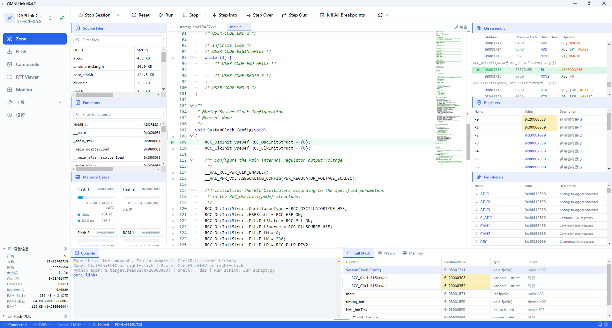
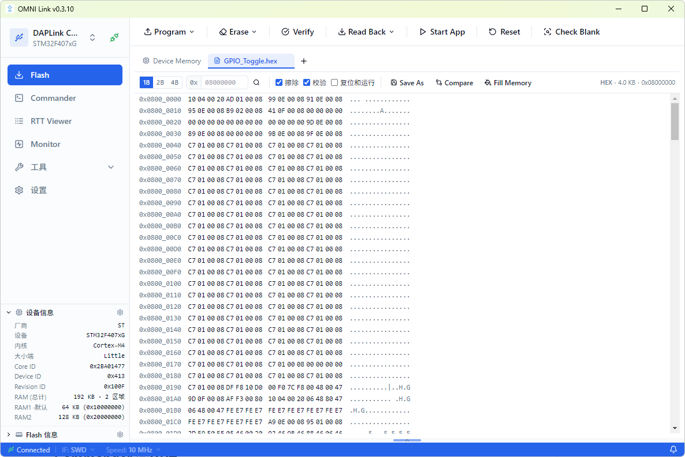
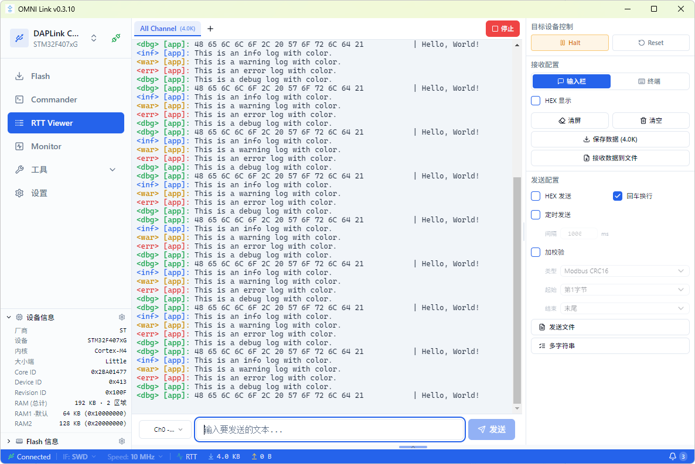
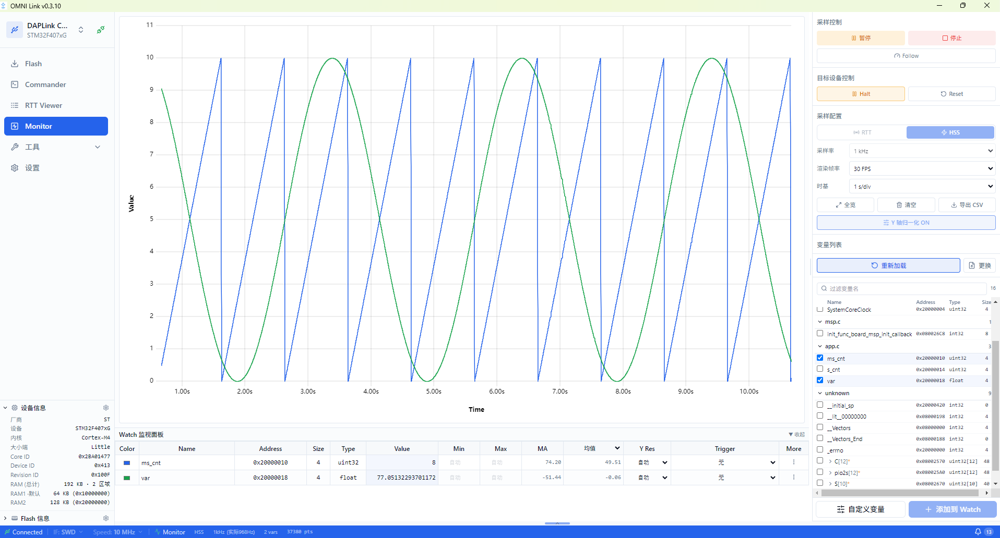

把烧录、命令行调试、RTT 日志、变量波形监控等散落在多个工具里的能力， 整合进一个工作台。支持 DAPLink / ST-Link / J-Link，无需额外购买专用调试硬件。
面向嵌入式开发者的全能调试工具集，覆盖从代码调试到固件烧录的完整链路
源码调试、反汇编、寄存器、外设、调用栈、Watch 变量监视与内存查看整合于一个视图，全链路可视化调试。
bin / hex / elf 固件烧录，整片与扇区擦除、自动校验、Hex 查看器、Fill Memory、Compare，文件拖拽即烧。
交互式 REPL，命令参考表与「调试」「断点调试」「解锁刷写」一键工作流，多步操作链单击完成。
SEGGER RTT 实时数据收发，多 tab 通道管理，日志级别着色，文件发送与录制，切换页面不中断数据流。
DWARF 符号解析自动提取变量地址，SWD / RTT 双传输，uPlot 波形图、触发、游标测量、CSV 导出。
Fault / Map Analyzer、进制转换、文件校验，配合 Keil Pack 导入扩展 STM32、GD32、NXP 等芯片支持。
四大核心页面，覆盖嵌入式调试的完整链路


bin / hex / elf 固件烧录，整片与扇区擦除、自动校验、Hex 查看器，文件拖拽即烧。

SEGGER RTT 实时数据收发，多 tab 通道管理，日志级别着色，切换页面不中断数据流。

DWARF 符号解析自动提取变量地址，SWD / RTT 双传输，uPlot 波形图、触发与 CSV 导出。
MIT 开源协议，可自由使用与分发
v0.4.2 · x64 · NSIS 安装包
查看全部版本与更新日志 → GitHub Releases